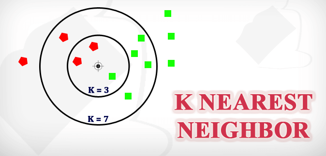

Salary Estimation Using KNN’s documentation!¶
Project Overview¶
This project aims to estimate the salary of an employee based on various factors such as age, education, capital gain, and hours worked per week. It utilizes the K-Nearest Neighbors (KNN) algorithm to make predictions.
K-Nearest Neighbors Code¶
# Import necessary libraries
import streamlit as st
import pandas as pd
import numpy as np
from sklearn.model_selection import train_test_split
from sklearn.neighbors import KNeighborsClassifier
from sklearn.preprocessing import StandardScaler
from sklearn.metrics import confusion_matrix, accuracy_score
import matplotlib.pyplot as plt
# Load Dataset
@st.cache_data
def load_data():
return pd.read_csv('C:/Users/USER/Documents/My GitHub Folder/Machine Learning Project/Machine-Learning-Projects/1. Supervised Learning/2. K-Nearest Neighbour/salary.csv')
# Summarize Dataset
def summarize_data(data):
st.write("Shape of dataset:", data.shape)
st.write("Head of dataset:", data.head())
# Map Salary Data to Binary Value
def map_salary_to_binary(data):
data['income'] = data['income'].map({'<=50K': 0, '>50K': 1}).astype(int)
return data
# Preprocess data and train the model
def preprocess_and_train(data):
X = data.iloc[:, :-1].values
Y = data.iloc[:, -1].values
X_train, X_test, y_train, y_test = train_test_split(X, Y, test_size=0.25, random_state=0)
sc = StandardScaler()
X_train = sc.fit_transform(X_train)
X_test = sc.transform(X_test)
model = KNeighborsClassifier(n_neighbors=22, metric='minkowski', p=2)
model.fit(X_train, y_train)
return model, X_test, y_test, sc
# Predict based on user input
def predict(model, sc, age, education, capital_gain, hours_per_week):
new_employee = [[age, education, capital_gain, hours_per_week]]
scaled_data = sc.transform(new_employee)
prediction = model.predict(scaled_data)
if prediction == 1:
return "Employee might have a salary above $50K."
else:
return "Employee might not have a salary above $50K."
# Main function
def main():
st.title('Salary Estimation - K-Nearest Neighbors')
# Load data
data = load_data()
# Summarize data
st.subheader('Dataset Summary')
summarize_data(data)
# Map salary data to binary value
data = map_salary_to_binary(data)
# Preprocess data and train model
model, X_test, y_test, sc = preprocess_and_train(data)
# Sidebar for user input
st.sidebar.header('Enter Employee Information')
age = st.sidebar.slider('Age', min_value=17, max_value=90, value=30, step=1)
education = st.sidebar.slider('Education (Years)', min_value=1, max_value=20, value=10, step=1)
capital_gain = st.sidebar.slider('Capital Gain', min_value=0, max_value=100000, value=0, step=1000)
hours_per_week = st.sidebar.slider('Hours Per Week', min_value=1, max_value=100, value=40, step=1)
# Predict based on user input
prediction = predict(model, sc, age, education, capital_gain, hours_per_week)
st.sidebar.markdown('**Prediction:**')
st.sidebar.write(prediction)
# Predictions for all test data
st.subheader('Predictions for Test Data')
y_pred = model.predict(X_test)
prediction_data = np.column_stack((y_pred, y_test))
st.write(pd.DataFrame(prediction_data, columns=['Predicted', 'Actual']))
# Evaluate model - Confusion Matrix and Accuracy
st.subheader('Model Evaluation')
cm = confusion_matrix(y_test, y_pred)
accuracy = accuracy_score(y_test, y_pred)
st.write('Confusion Matrix:')
st.write(cm)
st.write('Accuracy of the Model: {:.2f}%'.format(accuracy * 100))
if __name__ == '__main__':
main()
Results¶

# Test the Model